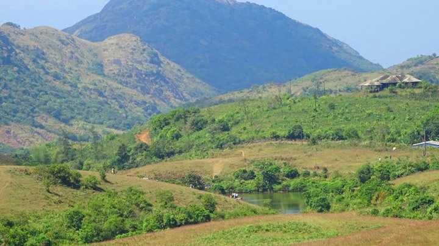
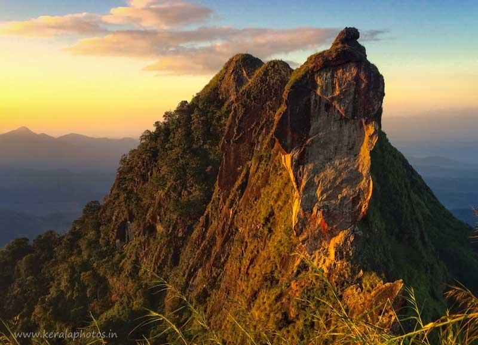

Kottayam
Kottayam is a city in the Indian state of Kerala. Kottayam literally means the interior
of a fort—Kotta + Akam. Flanked by the Western Ghats on the east and the Vembanad Lake and paddy fields of
Kuttanad on the west, Kottayam is a place that is known for extraordinary qualities.
Places to Visit in Kottayam
- Kottathavalam.
- Nadukani.
- Illikkal Kallu.
- Kumarakom Bird Sanctuary.
- Thirunakkara Mahadev Temple.

A fascinating cave carved out of rock surface is Kottathavalam lying on the top of a Murugan Hills at Kurisumala. The cave is considered to be the resting place for Madura Royal family. The cave is adorned with various sculptures of Gods and Goddesses along with the sculptures of weapons used in the ancient times giving us a glance into the amazing past.

After all the blessings from temples, it is time for some adventure. Nadukani is one such place nestled amid the wilderness of nature and densely wooded hills offering its visitors a beautiful trail for trekking. Lying at an altitude of 3000 ft above the sea level atop a hill, this place also affords a mesmerizing view of mountains on northern side and that of River Muvattupuzha.

The longest lake in India, Vembanad Lake flows across several districts in Kerala. It is called by several names including Punamada Lake, Kochi Lake, and Vembanadu Lake. Among the major highlights of this lake is Kettuvallams (houseboats), numerous resorts along the banks and the famous Nehru Trophy Boat RacLocated at a height of 6000 ft above the sea level in the Western Ghats of Kottayam, Kerala, Illikkal Kallu is a major tourist attraction and one of the most pristine spots in all of India. Situated in Moonnilavu Village, Meenachil taluk, the nearest city to the summit is Teekoy. Besides several other factors which make this peak unique, the most prominent feature is that half the boulder of the majestic rock has fallen apart. The remaining half stands sturdy and presents an extremely exalted picture. Surrounded by colossal green hills, the offbeat destination boasts of immaculate environs, enchanting panoramic vistas and an all around utopian atmosphere. In addition to the surreal natural beauty, the sublime view of the Arabian Sea in the near horizon as a thin blue stroke, is a sight beyond description.
A paradise for bird watchers, Kumarakom Bird Sanctuary or Vembanad Bird Sanctuary is situated on the banks of Lake Vembanad in kavanar River basin. The place is spread across a huge area of 14 acres providing a natural habitat to about 91 species of local birds and 50 species of migratory birds. Considered one of the largest bird sanctuaries in India, one can spot the local exotic variety from June to August while migratory bird visit the area from November to February. Apart from that, the sanctuary abodes various water bodies.

A popular Hindu shrine and great epitome of Kerala style of architecture, Thirunakkara Mahadev Temple is dedicated to Lord Shiva. The temple was established in 16th century by the king of Thekkumkur. The place is also adorned with several beautiful murals showcasing the Hindu themes. A festival of Aaraattu celebrated for 10 days witness several cultural performances of various art forms like Kathakali, Velakali and Mayilattom performed by professionals. The festival attracts devotees and tourists in large number to the temple.